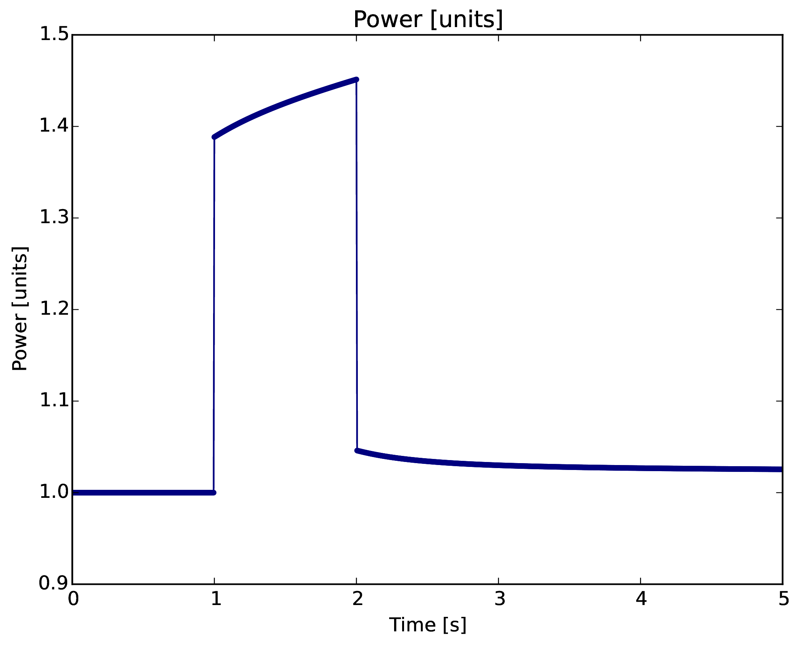

Progress on Coupled Physics Modeling in Fluoride Salt Cooled High Temperature Reactors
Kathryn Huff
at Oak Ridge National Laboratory
March 03, 2016


PB-FHR Fuel Geometry

Coupled Multi-Physics Analysis
Severe accident neutronics and thermal hydraulics can be simulated beautifully for simple geometries and well studied materials. (below, INL BISON work.)

FHR Coupled, Transient Analysis
- Collect experimental data
- Conduct algebraic, static, and benchmark simulations
- Develop 0D coupled neutronics/TH model (PyRK)
- Develop 3D neutronics/TH model
- Compare 0D and 3D simulations
- Couple additional physics (e.g. fuel performance)
TMSR-SF
<+Title+>
<+Title+>
Neutronics Benchmark Developement
Phase 1

<+Title+>
MOOSE-Based Application Development
<+Title+>
<+Title+>
PyRK: Python for Reactor Kinetics
Review of Nuclear Reactor Kinetics

\[\sigma(E,\vec{r},\hat{\Omega},T,x,i)\]

\[k=1\]
Reactivity
\[ \begin{align} k &= \mbox{"neutron multiplication factor"}\\ &= \frac{\mbox{neutrons causing fission}}{\mbox{neutrons produced by fission}}\\ \rho &= \frac{k-1}{k}\\ \rho &= \mbox{reactivity}\\ \end{align} \]

\[\beta_i, \lambda_{d,i}\]
PyRK
- 6-precursor-group,
- Point Reactor Kinetics model
- And Multi-Point Reactor Kinetics model
- Lumped Parameter thermal hydraulics model
- Finite volume thermal hydraulics model
- Object-oriented, geometry and material agnostic framework
Point Reactor Kinetics
\[ \begin{align} p &= \mbox{ reactor power }\\ \rho(t,&T_{fuel},T_{cool},T_{mod}, T_{refl}) = \mbox{ reactivity}\\ \beta &= \mbox{ fraction of neutrons that are delayed}\\ \beta_j &= \mbox{ fraction of delayed neutrons from precursor group j}\\ \zeta_j &= \mbox{ concentration of precursors of group j}\\ \lambda_{d,j} &= \mbox{ decay constant of precursor group j}\\ \Lambda &= \mbox{ mean generation time }\\ \omega_k &= \mbox{ decay heat from FP group k}\\ \kappa_k &= \mbox{ heat per fission for decay FP group k}\\ \lambda_{FP,k} &= \mbox{ decay constant for decay FP group k}\\ T_i &= \mbox{ temperature of component i} \end{align} \]Lumped Parameter Heat Transfer
The heat flow out of body $i$ is the sum of surface heat flow by conduction, convection, radiation, and other mechanisms to each adjacent body, $j$: \[ \begin{align} Q &= Q_i + \sum_j Q_{ij}\\ &=Q_i + \sum_j\frac{T_{i} - T_{j}}{R_{th,ij}}\\ \dot{Q} &= \mbox{total heat flow out of body i }[J\cdot s^{-1}]\\ Q_i &= \mbox{other heat transfer, a constant }[J\cdot s^{-1}]\\ T_i &= \mbox{temperature of body i }[K]\\ T_j &= \mbox{temperature of body j }[K]\\ j &= \mbox{adjacent bodies }[-]\\ R_{th} &= \mbox{thermal resistence of the component }[K \cdot s \cdot J^{-1}]. \end{align} \]Quality Control
Unit Checking

In PyRK, the Pint package (pint.readthedocs.org/en/0.6/) is used keeping track of units, converting between them, and throwing errors when unit conversions are not sane.
Version Control

Keeping track of versions of the code makes it possible to experiment without fear and placing the code online encourages use and collaboration.
Automated Documentation

Automated documentation creates a browsable website explaining the most recent version of the code.
Test Suite

The classes and functions that make up the code are tested individually for robustness using nose.
Continuous Integration

The tests are run every time a change is made to the repository online. The results are public. If a main branch has a failed test, I get an email.
PB-FHR Reactivity Insertion
Pebble-Bed, Fluoride Salt Cooled, High-Temperature Reactor
- Molten FLiBe Coolant
- Annular Core
- Annular Pebble Fuel
- Steady Inlet Temperature
- Ramp Reactivity Insertion, 600pcm over 10s
Ramp Reactivity Insertion

Ramp Reactivity Insertion
# External Reactivity
from reactivity_insertion import RampReactivityInsertion
rho_ext = RampReactivityInsertion(timer=ti,
t_start=t_feedback + 10.0*units.seconds,
t_end=t_feedback + 20.0*units.seconds,
rho_init=0.0*units.delta_k,
rho_rise=600.0*units.pcm,
rho_final=600.0*units.pcm)
Components
fuel = th.THComponent(name="fuel",
mat=TRISO(),
vol=vol_fuel,
T0=t_fuel,
alpha_temp=alpha_fuel,
timer=ti,
heatgen=True,
power_tot=power_tot/n_pebbles,
sph=True,
ri=r_mod,
ro=r_fuel
)
mod = th.THComponent(name="mod",
mat=Graphite(),
vol=vol_mod,
T0=t_mod,
alpha_temp=alpha_mod,
timer=ti,
sph=True,
ri=0.0,
ro=r_mod)
cool = th.THComponent(name="cool",
mat=Flibe(),
vol=vol_cool,
T0=t_cool,
alpha_temp=alpha_cool,
timer=ti)
shell = th.THComponent(name="shell",
mat=Graphite(),
vol=vol_shell,
T0=t_shell,
alpha_temp=alpha_shell,
timer=ti,
sph=True,
ri=r_fuel,
ro=r_shell)
Heat Transfer
# The coolant convects to the pebbles
cool.add_convection('pebble', h=h_cool, area=a_pb)
cool.add_advection('cool', m_flow/n_pebbles, t_inlet, cp=cool.cp)
Ramp Reactivity Insertion

{kind=link}
Fuel Layer Temperature


Coolant Temperature

Insights at Disparate Scales

Links
Acknowledgements
- Denia Djokic
- Matthew Gidden
- Massimiliano Fratoni
- Ehud Greenspan
- Per Peterson
- Anthony Scopatz
- Xin Wang
- Paul Wilson
- Jasmina Vujic
- and many more...

THE END
Katy Huff
katyhuff.github.io/2016-03-03-ornl
Progress on Coupled Physics Modeling in Fluoride Salt Cooled High Temperature Reactors by Kathryn Huff is licensed under a Creative Commons Attribution 4.0 International License.
Based on a work at http://katyhuff.github.io/2016-03-03-ornl.